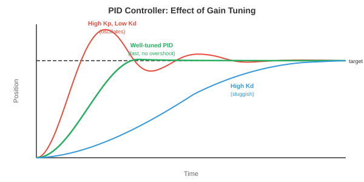

机器人学习¶
一句话总结：机器人学习把算法与物理动作缝合起来，覆盖运动学、动力学、经典控制、模仿学习、仿真到现实迁移、操作、运动与安全，让机器人能真正走、抓、动手。
机器人学习在算法与物理动作之间架起了桥梁。 本节涵盖运动学、动力学、经典控制、模仿学习、仿真到现实迁移、操作、运动以及安全 —— 这些正是让机器人拥有移动、抓取、行走、与真实世界互动能力的核心技术.
-
前几章我们研究了如何感知世界 (第 8 章、第 11 章第 1 篇)，以及如何从数据中学习 (第 6 章). 但仅有感知和学习还不够。 一个机器人必须会行动：挪动手臂去抓杯子、走过崎岖地形，或在仓库里穿梭导航。 这就是机器人学习登场的地方。
-
核心挑战在于：物理世界是连续的、高维的、富含接触的，而且不留情面。 图像识别里分类错了，无非是个错误标签；机器人控制错了，可能就是一台报废的机器人或一件摔碎的物件。 代价完全不在一个量级。
机器人运动学¶
-
运动学 (kinematics) 描述运动的几何关系，不考虑力。 机器人手臂就是一串由关节连接的刚性连杆。 每个关节有一个自由度 (Degree of Freedom, DoF)：要么旋转 (转动关节)，要么滑动 (平移关节).
-
机器人的构型 (configuration) 是所有关节角 (或位移) 的集合 \(\mathbf{q} = [q_1, q_2, \ldots, q_n]^T\). 这个向量生活在关节空间 (joint space) (也叫构型空间) 里，这是一个 \(n\) 维空间，每个轴对应一个关节。 一个 6 自由度手臂就有一个 6 维的构型空间。

-
正运动学 (Forward Kinematics, FK) 根据关节角计算末端执行器 (那只"手") 的位置与朝向。 它是一个函数 \(\mathbf{x} = f(\mathbf{q})\)，把关节空间映射到任务空间 (task space) (末端执行器在 3D 中的位置与朝向，也叫笛卡尔空间).
-
每个关节由一个 \(4 \times 4\) 的齐次变换矩阵描述 (回想第 2 章的仿射变换). Denavit-Hartenberg 约定 (Denavit-Hartenberg convention, DH 约定) 用四个数参数化每个关节：连杆长度 \(a\)、连杆扭角 \(\alpha\)、连杆偏距 \(d\)、关节角 \(\theta\). 第 \(i\) 个关节的变换是:
-
整条链的正运动学就是所有关节变换的乘积：\(T_{0 \to n} = T_1 T_2 \cdots T_n\). 这就是第 2 章讲的矩阵乘法把一串变换级联起来：依次施加每个关节的变换，从基座一路把坐标系旋转、平移到末端执行器。
-
逆运动学 (Inverse Kinematics, IK) 是反过来的问题：给定期望的末端位姿 \(\mathbf{x}^*\)，求满足 \(f(\mathbf{q}) = \mathbf{x}^*\) 的关节角 \(\mathbf{q}\). 这个问题要难得多，因为:
- 映射是非线性的 (里面全是正弦余弦).
- 可能有多解 (不同的手臂姿态到达同一点).
- 可能无解 (目标够不到).
-
只有特定机构才存在解析解。 对一般机器人，IK 用雅可比矩阵 (Jacobian) 迭代求解。 雅可比 \(J(\mathbf{q})\) 把关节角的微小变化和末端位置的微小变化关联起来 (回想第 3 章的雅可比):
-
若想让末端移动一小段 \(\Delta \mathbf{x}\)，我们需要 \(\Delta \mathbf{q} = J^{-1} \Delta \mathbf{x}\) (或者当 \(J\) 不是方阵时用伪逆 \(J^+ \Delta \mathbf{x}\)). 反复迭代直到末端到达目标，本质上就是把牛顿法 (第 3 章) 用在运动学方程上。
-
在奇异点 (singularity) 附近，雅可比会失去满秩 (某些列变得线性相关，见第 2 章). 从物理上看，这意味着机器人损失了一个自由度：无论关节怎么转，末端就是没法朝某些方向移动。 伪逆在奇异点附近会爆炸，所以改用阻尼最小二乘 (加一个正则项 \(\lambda^2 I\)):
动力学与控制¶
- 动力学 (dynamics) 把力也加进来。 机器人手臂的运动方程遵循机械臂方程 (manipulator equation):
-
其中 \(M(\mathbf{q})\) 是质量 (惯量) 矩阵，\(C(\mathbf{q}, \dot{\mathbf{q}})\) 描述科氏力与离心力效应，\(\mathbf{g}(\mathbf{q})\) 是重力向量，\(\boldsymbol{\tau}\) 是关节力矩向量 (控制输入). 这是一组二阶微分方程，每个关节一个。
-
质量矩阵 \(M\) 恒为对称正定 (回顾第 2 章：正定矩阵保证唯一极小；这里则保证系统对施加力矩的响应是可预测的).
-
比例-积分-微分控制器 (Proportional-Integral-Derivative controller, PID) 是机器人领域用得最广的控制器。 对每个关节，它根据误差 \(e(t) = q_{\text{desired}}(t) - q_{\text{actual}}(t)\) 计算力矩:
- 三项各有直观的角色:
- 比例项 (\(K_p\))：按当前误差成比例地修正。 误差大就修得多，就像一根把关节拉向目标的弹簧。
- 积分项 (\(K_i\))：累加历史误差，消除稳态偏差。 如果关节一直差那么一点儿，积分会慢慢攒起来，提供额外推力。
- 微分项 (\(K_d\))：对误差的变化率做反应，提供阻尼。 当误差在减小时，它会减缓响应，避免过冲和振荡。

-
调 \(K_p, K_i, K_d\) 是门平衡术：\(K_p\) 太大会振荡，\(K_d\) 太大会迟钝，\(K_i\) 太大会积分饱和 (wind-up) (持续误差期间积分无边界增长).
-
模型预测控制 (Model Predictive Control, MPC) 会往前看。 在每个时间步，它解一个优化问题：找出一段未来控制序列，在动力学模型与约束条件下，让代价函数 (比如"跟踪误差 + 控制代价") 在有限时域内取极小。 只把第一个控制施加下去，下一个时间步再重来一遍。
-
这里 \(\|\mathbf{x}\|_Q^2 = \mathbf{x}^T Q \mathbf{x}\) 是用正定矩阵 \(Q\) 加权的范数 (第 2 章)，可以对不同状态误差施加不同惩罚。 MPC 天然能处理约束 (关节极限、力矩极限、避障)，因为它们直接写进优化问题里。
-
阻抗控制 (impedance control) 调节力与运动之间的关系，而不是死板地跟随一条轨迹。 它不是命令"到位置 \(x\)"，而是命令"表现得像一个以 \(x\) 为中心的弹簧-阻尼系统":
- 其中 \(K_s\) 是刚度矩阵，\(D\) 是阻尼矩阵。 这让机器人具备柔顺性 (compliance)：撞到障碍时它会退让，而不是硬顶过去。 阻抗控制对富含接触的任务至关重要，比如把销钉插进孔里，或把东西递给人。
模仿学习¶
-
除了手工设计控制器，我们也可以从演示中学控制策略。 人做一遍任务，机器人观察，学习算法从中提炼出策略。 这叫模仿学习 (imitation learning) (或从演示中学习).
-
行为克隆 (Behavioural Cloning, BC) 是最简单的做法：把演示当成一个监督学习数据集。 给定专家的观测-动作对 \(\{(\mathbf{o}_t, \mathbf{a}_t)\}\)，训练一个策略 \(\pi_\theta(\mathbf{a} \mid \mathbf{o})\) 从观测预测专家动作。 这就是标准的监督学习 (第 6 章)，最小化损失:

-
问题在于分布偏移 (distribution shift) (也叫误差累积问题). 训练时策略看到的是专家状态；部署时策略自己的小误差会把它推到专家从未经过的状态。 这些陌生状态导致更糟的动作，更糟的动作又带来更陌生的状态，误差迅速滚雪球。
-
想象一下你跟着一位完美司机学开车。 你从没见过"轻微偏离后会发生什么"，因为专家从不偏离。 第一次略微飘出车道时，你完全不知道怎么救回来。
-
DAgger (Dataset Aggregation，数据集聚合) 用迭代解决这个问题:
- 用当前数据训练一个策略。
- 让策略在环境里跑，收集新状态。
- 请专家给这些新状态标注正确动作。
- 把新数据并入数据集，重新训练。
-
多轮迭代下，数据集覆盖的就是策略实际会经过的状态，而不只是专家的轨迹。 策略因此变强，因为它见过自己的错误，也学会了怎么把自己救回来。
-
基于 Transformer 的动作分块 (Action Chunking with Transformers, ACT) 是一种现代做法：策略预测的是一段未来动作序列 (一个"分块")，而不是一次一步。 实现上用一个带 Transformer 骨干的条件变分自编码器 (Conditional Variational Autoencoder, VAE). 预测动作块更鲁棒，因为它抓住了时间相关性：一次伸手动作的顺滑性被编码进整块动作，而不是靠单步自回归预测硬拼出来 (那样很容易漂移).
-
扩散策略 (Diffusion Policy) 把扩散模型 (第 8 章) 用在动作生成上。 它不是预测单一动作，而是建模在给定观测下所有可能动作的完整分布。 从噪声出发，迭代去噪，生成一段动作序列。 这天然处理多模态性 (multimodality)：当任务有多种合法完成方式 (从左边伸手或从右边伸手)，扩散模型可以同时表达两种模式；而回归型策略会把它们平均掉 (最后从中间伸手，结果可能哪种都不对).
仿真到现实迁移¶
-
在真实世界训练机器人昂贵、缓慢又危险。 一个靠试错学抓取的机器人，可能要试几千次，一路上摔坏东西也摔坏自己。 仿真 (simulation) 提供了无限、安全、快速的经验。 但仿真器不完美：物理是近似的，视觉是合成的，接触是简化的。
-
仿真到现实差距 (sim-to-real gap) 就是仿真表现和真实表现之间的落差。 一个在仿真里跑得完美的策略，可能到了真机上彻底失败，因为它过拟合到仿真器特有的细节上了。

-
域随机化 (domain randomisation) 通过在大范围的仿真设置上训练来对付这个问题。 不用一个仿真，用成千上万个，把下面这些参数都随机化:
- 物理：摩擦系数、质量、阻尼
- 视觉：光照、纹理、颜色、相机位置
- 动态：电机延迟、噪声水平
-
思路是：如果策略在所有这些变体里都能工作，真实世界不过是分布里的"又一个变体". 策略学到的是对被随机化属性不变的特征，这些不变特征就能迁移过去。
-
系统辨识 (system identification) 走的是相反路线：不做全面随机化，而是仔细测量真实系统的物理参数，把仿真器调到匹配。 这样仿真更准，但很脆弱 —— 任何没建模的效应都会造成差距。
-
实践中最好的做法是两者结合：用系统辨识把仿真器调到大致靠谱，再用域随机化覆盖剩余的不确定性。
-
通过微调实现仿真到现实：主要在仿真里训练，然后用少量真实世界数据做微调。 仿真给出一个不错的初始化，真实数据修正仿真器特有的偏差。 这比从零在真机上训练所需的数据少得多。
面向机器人学的世界模型¶
-
上面所有的强化学习 (Reinforcement Learning, RL) 与模仿学习方法都是无模型 (model-free) 的：策略通过直接交互 (或演示) 学习行动，并不显式建模世界如何运转。 另一条路是基于模型 (model-based) 的学习：先学一个环境动力学的模型，再用这个模型来规划或生成合成经验。
-
一个世界模型 (world model) 学的是转移函数 \(p(s_{t+1} \mid s_t, a_t)\)：给定当前状态与动作，预测下一状态 (第 10 章已引入). 在机器人学里，这意味着预测机器人做某个动作后会发生什么："如果我把这块积木往左推，它会滑 3 厘米，后面的杯子会被撞倒."
-
吸引人的地方在于样本效率 (sample efficiency). 真机交互很贵。 如果机器人能从少量真实数据里学到一个世界模型，就能靠在脑子里推演成千上万条轨迹来"想象"，在完全不碰物理世界的情况下规划并打磨自己的策略。 这跟棋手在脑中推演棋步很像。
-
DreamerV3 是一个通用的基于模型的 RL 智能体。 它联合学习三个组件:
- 一个表征模型，把观测编码成紧凑的潜在状态。
- 一个转移模型 (即世界模型)，从当前潜在状态与动作预测下一潜在状态。
- 一个奖励模型，从潜在状态预测奖励。
-
智能体随后通过在潜空间中把转移模型往前滚动多步来"做梦"，在这些想象轨迹上训练策略，再把策略搬到真实环境里用。 关键创新是：所有想象都发生在潜空间 (紧凑的学到的表征) 里，而不是像素空间，使得计算上完全可行。
-
转移模型 \(f_\theta\) 与奖励模型 \(g_\theta\) 在真实经验上训练，策略则在想象出的轨迹上训练。 这样就把数据采集和策略优化解耦开了。
-
对机器人操作而言，世界模型开启了心理演练 (mental rehearsal). 在真的去抓之前，机器人可以在自己学到的模型里模拟好几种抓法，挑最可能成功的那种。 对富含接触的任务尤其宝贵 —— 在真机上试错既慢又危险。
-
世界模型也天然连接仿真到现实：在真实数据上训练出来的世界模型，实际上就是一个能自动捕捉真实物理的学到的仿真器，直接绕开了仿真到现实的差距。 对那些机理清楚的场景，它可能不如手工仿真器精确，但它能抓住手工仿真器常常搞错的效应 (摩擦、形变、接触动力学).
-
联合嵌入预测架构 (Joint Embedding Predictive Architecture, JEPA) (第 10 章引入) 提供了一种替代像素级预测的方案。 它不预测精确的未来观测，而是在嵌入空间中预测："下一状态的潜在表征会接近这个向量." 这避开了做像素完美预测的难题 (既没必要，又浪费算力)，转而聚焦于对决策真正重要的那些未来方面。
-
世界模型的局限是预测误差累积. 转移模型的小误差在长时程滚动中会累积起来，让想象出的轨迹和现实越走越远。 缓解手段包括：缩短想象时程、用集成模型 (借助不确定性检测预测何时开始不靠谱)，以及定期用新鲜的真实数据把模型拉回地面。
操作¶
-
操作 (manipulation) 是使用机器人末端执行器与物体互动的艺术：抓、放、推、插入、装配。
-
抓取 (grasping) 是操作技能的基石。 目标是找到一个稳定的抓取位姿：一个位置与朝向，让夹爪能牢牢握住物体。
-
解析式抓取规划靠物理。 若接触力能抵抗外部力旋量 (力与力矩)，抓取就是稳定的。 对一个平行夹爪，最简单的判据是力封闭 (force closure) 条件：接触法线必须张成所有力方向，让抓取能抵抗任何扰动。 这归结为检查抓取旋量矩阵的秩 —— 是第 2 章秩概念的直接应用。
-
数据驱动的抓取则从传感器输入学习预测抓取成败。 给定桌上物体的深度图，网络对每个候选夹爪位姿预测一个抓取质量分数。 GraspNet 及类似架构使用点云编码器 (PointNet 风格，第 8 章) 预测 6 自由度抓取位姿 (位置 + 朝向) 与置信度分数。
-
灵巧操作 (dexterous manipulation) 超越了简单的取放。 一只多指手有 20+ 自由度，能做手内旋转 (在指间转笔)、工具使用、精细装配。 状态空间庞大，接触复杂，是机器人学最难的问题之一。
-
学习灵巧操作常在仿真中用强化学习 (第 6 章) 配合重度域随机化。 OpenAI 用 Shadow 手解魔方的工作，就是在仿真里用随机化物理训练近端策略优化 (Proximal Policy Optimization, PPO) 策略，然后成功迁移到真机上。
-
富含接触的任务 比如销孔插入或擦桌子，要求机器人在移动时和环境保持受控接触。 这类任务需要力感知与柔顺控制 (阻抗控制)，而且难以精确仿真，因为接触物理是出了名的难建模。
运动¶
-
运动 (locomotion) 是让机器人身体在世界里挪动：走、跑、爬、游。 它和操作的关键差别在于，机器人必须在移动的同时保持平衡，而且和地面的接触点会随时间变化。
-
足式运动 (legged locomotion) 之所以有挑战性，是因为它天生不稳定。 双足机器人 (人形) 在迈步时单腿支撑，就像一个倒立摆。 质心必须落在支撑多边形 (与地面接触的脚构成的凸包) 上方，否则机器人就会摔倒。
-
零力矩点 (Zero Moment Point, ZMP) 是地面上一个点，在该点处重力与惯性力产生的净力矩为零。 只要 ZMP 落在支撑多边形内，机器人就不会翻倒。 传统的人形控制器 (比如本田的 ASIMO) 都在规划让 ZMP 保持在允许范围内的轨迹。
-
中枢模式发生器 (Central Pattern Generator, CPG) 是一种受生物启发的基于振荡器的控制器。 动物用脊髓里的神经回路产生节律性运动模式 (走、快步、奔驰)，不需要大脑持续介入。 CPG 模型用一组耦合微分方程:
-
其中 \(\phi_i\) 是振荡器 \(i\) 的相位，\(\omega_i\) 是固有频率，\(w_{ij}\) 是耦合强度，\(\psi_{ij}\) 是期望的相位差。 不同的相位关系产生不同步态：所有腿同步 (蹦跳)、交替成对 (小跑)、依次抬起 (走). 正弦耦合天然让振荡器同步，就像傅里叶级数 (第 3 章) 把运动分解到频率成分一样。
-
面向运动的强化学习 已成为敏捷四足和人形机器人的主流方案。 机器人在仿真中通过试错学习策略 \(\pi(\mathbf{a} \mid \mathbf{o})\) (第 6 章)，奖励前进速度、稳定性、能量效率，惩罚摔倒、关节越限和抖动。
-
近期工作 (如 Agility Robotics、Boston Dynamics 与学术界) 的关键洞察是：RL 训练出的运动策略远比手工设计的控制器更鲁棒。 它们能自然学到从推挤中恢复、适应地形变化、以及工程师从未预想到的状况。 训练通常用 PPO (第 6 章) 加域随机化。
-
四足机器人 (比如 Boston Dynamics Spot、宇树 Go2) 已成为足式机器人的主力。 四条腿提供了内在稳定性 (三条腿组成的三角形支撑，总能在一条腿抬起时撑住身体). 四足的 RL 策略战果斐然：3+ m/s 奔跑、上下楼梯、走乱石地形、被踢一脚也能站稳。
-
人形运动更难，因为双足支撑多边形更小、质心更高。 近期进展 (Tesla Optimus、Figure、宇树 H1) 都是用在仿真中训练的 RL，配以精心设计的奖励函数。 人形不仅要学会走，还要学会协调手臂摆动来平衡、走不平地面、以及从扰动中恢复。
机器人学习中的安全¶
-
一个靠随机探索学习的机器人 (如 RL) 可能会伤到自己、破坏环境或危及附近的人。 安全机器人学习把探索约束在能避免灾难性后果的范围内。
-
约束强化学习 (Constrained RL) 在马尔可夫决策过程 (Markov Decision Process, MDP) (第 6 章) 上加安全约束。 目标变成：最大化奖励且满足 \(J_c(\pi) \leq d\)，其中 \(J_c\) 是期望累计代价 (比如碰撞事件), \(d\) 是可容忍的最大代价。 约束策略优化 (Constrained Policy Optimisation, CPO) 等算法把 PPO 扩展成能处理这类约束。
-
安全包络 (safety envelopes) 定义了机器人无论如何都不许越过的硬边界，不管学到的策略说什么。 一个安全控制器监测机器人状态，在快要越界时接管学到的策略 (比如即将撞到关节极限、离人太近仍在高速运动、力超过阈值). 这是分层架构：学习算法管性能，安全层管约束。
-
风险感知规划 (risk-aware planning) 显式建模环境和机器人自身状态估计中的不确定性。 它不为最可能的结果做规划，而是为置信区间内的最坏情形做规划。 这跟条件数概念 (第 2 章) 有关：一个良态系统对扰动鲁棒，风险感知规划寻找的正是在扰动下仍然安全的控制策略。
编码任务 (用 CoLab 或 notebook)¶
-
为一个简单的 2 连杆平面机器人手臂实现正运动学。 计算并可视化不同关节角下末端执行器的位置。
import jax.numpy as jnp import matplotlib.pyplot as plt def forward_kinematics(q1, q2, l1=1.0, l2=0.8): """计算 2 连杆手臂的关节与末端执行器位置.""" x1 = l1 * jnp.cos(q1) y1 = l1 * jnp.sin(q1) x2 = x1 + l2 * jnp.cos(q1 + q2) y2 = y1 + l2 * jnp.sin(q1 + q2) return jnp.array([0, x1, x2]), jnp.array([0, y1, y2]) fig, ax = plt.subplots(figsize=(6, 6)) configs = [(0.5, 0.3), (1.0, -0.5), (1.5, 1.0), (2.0, -1.5)] colors = ["#e74c3c", "#3498db", "#27ae60", "#9b59b6"] for (q1, q2), c in zip(configs, colors): xs, ys = forward_kinematics(q1, q2) ax.plot(xs, ys, "o-", color=c, linewidth=2, markersize=6, label=f"q=({q1:.1f}, {q2:.1f})") ax.set_xlim(-2, 2); ax.set_ylim(-2, 2) ax.set_aspect("equal"); ax.grid(True); ax.legend() ax.set_title("2-Link Robot Arm: Forward Kinematics") plt.show() -
用雅可比伪逆实现逆运动学。 从一个随机构型出发，迭代地把末端执行器移到目标点。
import jax import jax.numpy as jnp import matplotlib.pyplot as plt l1, l2 = 1.0, 0.8 def end_effector(q): x = l1 * jnp.cos(q[0]) + l2 * jnp.cos(q[0] + q[1]) y = l1 * jnp.sin(q[0]) + l2 * jnp.sin(q[0] + q[1]) return jnp.array([x, y]) jacobian_fn = jax.jacobian(end_effector) target = jnp.array([0.5, 1.2]) q = jnp.array([0.1, 0.1]) trajectory = [end_effector(q)] for _ in range(50): pos = end_effector(q) error = target - pos if jnp.linalg.norm(error) < 1e-4: break J = jacobian_fn(q) # 阻尼伪逆, 用于处理接近奇异的情况 dq = J.T @ jnp.linalg.solve(J @ J.T + 0.01 * jnp.eye(2), error) q = q + dq trajectory.append(end_effector(q)) traj = jnp.stack(trajectory) plt.plot(traj[:, 0], traj[:, 1], "b.-", label="end-effector path") plt.plot(*target, "r*", markersize=15, label="target") plt.gca().set_aspect("equal"); plt.grid(True); plt.legend() plt.title(f"IK converged in {len(trajectory)-1} steps") plt.show() -
仿真一个简单的 PID 控制器跟踪期望的关节轨迹。 观察不同增益调节的效果。
import jax.numpy as jnp import matplotlib.pyplot as plt # 期望轨迹: 平滑的正弦运动 dt = 0.01 t = jnp.arange(0, 5, dt) q_desired = jnp.sin(2 * t) # 仿真二阶动力学: m * q_ddot + b * q_dot = tau m, b_damp = 1.0, 0.5 for Kp, Kd, Ki, label in [(10, 5, 0, "PD only"), (10, 5, 2, "PID"), (50, 10, 2, "Aggressive PID")]: q, q_dot, integral = 0.0, 0.0, 0.0 qs = [] for i in range(len(t)): error = q_desired[i] - q integral += error * dt d_error = -q_dot # 误差的导数 (期望速度已知, 此处做了简化) tau = Kp * error + Kd * d_error + Ki * integral q_ddot = (tau - b_damp * q_dot) / m q_dot += q_ddot * dt q += q_dot * dt qs.append(float(q)) plt.plot(t, qs, label=label) plt.plot(t, q_desired, "k--", label="desired", linewidth=2) plt.xlabel("Time (s)"); plt.ylabel("Joint angle") plt.legend(); plt.title("PID Controller Tracking") plt.show()
📌 本节要点¶
- 运动学 vs 动力学：运动学只讲几何关系，动力学把力、质量、力矩全都算进来。
- 正运动学与逆运动学: FK 从关节角算末端位姿 (显式), IK 反过来求关节角 (非线性、多解或无解，靠雅可比迭代).
- 奇异点与阻尼最小二乘：雅可比失秩时机器人损失自由度，加入 \(\lambda^2 I\) 阻尼项避免伪逆爆炸。
- PID 三项：比例修正当前误差、积分消稳态偏差、微分提供阻尼；三者需平衡，避免振荡、迟钝或积分饱和。
- MPC 与阻抗控制: MPC 用滚动优化处理约束，阻抗控制让机器人像弹簧-阻尼那样对接触柔顺。
- 行为克隆与分布偏移: BC 是监督学习模仿专家，但小误差滚雪球；DAgger 通过让专家标注策略遇到的新状态来修复。
- 扩散策略与动作分块：现代模仿学习用扩散建模多模态动作，用 ACT 预测动作块以提高时间一致性。
- 仿真到现实的三板斧：域随机化覆盖参数分布、系统辨识精细对齐、少量真机微调修偏差。
- 世界模型：学到的转移函数让机器人"闭眼想象"上千条轨迹，提高样本效率，但要防长时程预测误差累积。
- 操作与运动的分野：操作关心抓稳与富含接触任务 (力封闭、阻抗、灵巧手 RL)；运动关心平衡 (ZMP、CPG、PPO 训练四足与人形).
- 安全机器人学习：约束 RL、安全包络、风险感知规划共同确保机器人在探索时不出灾难性事故。